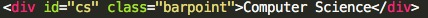

I want to talk about the jQuery that made the blog filtering possible, in a very general view. So here is the bulk of the code:

Without going into details, here is what the code above accomplishes: Whenever a filter (named as ".barpoint" in the code) is clicked, it turns every option except the clicked to be #999 color. #999 is a hex color code for gray. Technically, #999 is a shorthand for #999999, which has an RGB value of (153, 153, 153). Also, it turns the option that is clicked to be #87BDB1, which is the turquoise color.
RGB color model is an additive color model in which red, green, blue light are added togehter in various ways to reproduce a broad array of colors. So an RGB value of (153, 153, 153) means the red has a value of 153, green has a value of 153, and blue has a value of 153. The 153 value here means that it has 153/255 percentage of that color. If you want to learn more deeply of each line of code, continue reading. Else, you may end here to save yourself some headaches.
$('.barpoint').click(function(event))
This essentially runs the entire code snippet whenever a filter is clicked. Nothing more, nothing less.
$(this).parent().children().css('color', '#999')
$(this).css('color','#87BDB1')
When a filter is clicked, have all other options turn into #999 color (which we learned from above that it stands for a gray color). Then turn the clicked filter to be #87BDB1 color. This is to tell the user that they have successfully chosen the filter by differentiating colors.
var category = "." + $(this).attr('id')
This might be a little tricky. We first initialized a variable called category and we are assigning a value into the variable. The value is a String, concatenated by "." and $(this).attr('id'). The latter essentially grabs the clicked filter's attribute called 'id'. For instance, if a user clicks on a filter called 'Computer Science', the filter has an attribute id called 'cs,' as you can see in the snippet below:

Concatenate "." and that attribute called 'id', and we assign the value to the variable called category. For instance, in this specific case, we would assign the value of .cs
.?
In CSS, a div class can have class type and a id type. To select a div by its class, you would call #(name of the class), and to select a div by its id, you would call .(name of the id). So since we are trying to select the id attribute of the div, we use . notation.
If and else are the funadmental conditional statments in computer programming. They are usually formatted as follows: if (condition) { consequence} else {alternative}. In translated English, it means if the condition is true, run the consequence. Else, run the alternative. Applying this knowledge to this snippet of code:
We have the condition = $(this).hasClass('all'), consequence = $('.article').show();, and alternative = $('.article').hide(); $(category).show();
With the knowledge that we've built up to this point, it is easy to figure out what condition, consequence, and the alternative do. Try to figure them out by yourself! (Hint: try to just read them in English and see if they make sense).